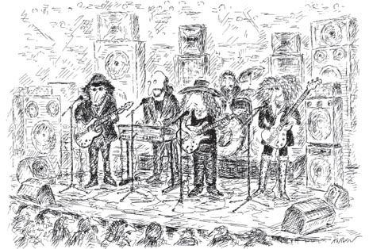

What do you remember from your childhood? Almost everyone remembers some bits and pieces, if not more. Perhaps you have some positive memories, like family vacations, teachers, friends, summer camps or academic awards; and some negative memories, like family conflicts, sibling rivalries, problems at school, or even some sad or troubling events. Running on Empty is not about any of those kinds of memories. In fact, it’s not about anything that you can remember or anything that happened in your childhood. This book is written to help you become aware of what didn’t happen in your childhood, what you don’t remember. Because what didn’t happen has as much or more power over who you have become as an adult than any of those events you do remember. Running on Empty will introduce you to the consequences of what didn’t happen: an invisible force that may be at work in your life. I will help you determine whether you’ve been affected by this invisible force and, if so, how to overcome it.
Many fine, high-functioning, capable people secretly feel unfulfilled or disconnected. “Shouldn’t I be happier?” “Why haven’t I accomplished more?” “Why doesn’t my life feel more meaningful?” These are questions which are often prompted by the invisible force at work. They are often asked by people who believe that they had loving, well-meaning parents, and who remember their childhood as mostly happy and healthy. So they blame themselves for whatever doesn’t feel right as an adult. They don’t realize that they are under the influence of what they don’t remember … the invisible force.
By now, you’re probably wondering, what is this Invisible Force? Rest assured it’s nothing scary. It’s not supernatural, psychic or eerie. It’s actually a very common, human thing that doesn’t happen in homes and families all over the world every day. Yet we don’t realize it exists, matters or has any impact upon us at all. We don’t have a word for it. We don’t think about it and we don’t talk about it. We can’t see it; we can only feel it. And when we do feel it, we don’t know what we’re feeling.
In this book, I’m finally giving this force a name. I’m calling it Emotional Neglect. This is not to be confused with physical neglect. Let’s talk about what Emotional Neglect really is.
Everyone is familiar with the word “neglect.” It’s a common word. The definition of “neglect,” according to the Merriam-Webster Dictionary, is “to give little attention or respect or to disregard; to leave unattended to, especially through carelessness.”
“Neglect” is a word used especially frequently by mental health professionals in the Social Services. It’s commonly used to refer to a dependent person, such as a child or elder, whose physical needs are not being met. For example a child who comes to school with no coat in the winter, or an elder shut-in whose adult daughter frequently “forgets” to bring her groceries.
Pure emotional neglect is invisible. It can be extremely subtle, and it rarely has any physical or visible signs. In fact, many emotionally neglected children have received excellent physical care. Many come from families that seem ideal. The people for whom I write this book are unlikely to have been identified as neglected by any outward signs, and are in fact unlikely to have been identified as neglected at all.
So why write a book? After all, if the topic of Emotional Neglect has gone unnoticed by researchers and professionals all this time, how debilitating can it really be? The truth is, people suffering from Emotional Neglect are in pain. But they can’t figure out why, and too often, neither can the therapists treating them. In writing this book, I identify, define and suggest solutions to a hidden struggle that often stymies its sufferers and even the professionals to whom they sometimes go for help. My goal is to help these people who are suffering in silence, wondering what is wrong with them.
There is a good explanation for why Emotional Neglect has been so overlooked. It hides. It dwells in the sins of omission, rather than commission; it’s the white space in the family picture rather than the picture itself. It’s often what was NOT said or observed or remembered from childhood, rather than what WAS said.
For example, parents may provide a lovely home and plenty of food and clothing, and never abuse or mistreat their child. But these same parents may fail to notice their teen child’s drug use or simply give him too much freedom rather than set the limits that would lead to conflict. When that teen is an adult, he may look back at an “ideal” childhood, never realizing that his parents failed him in the way that he needed them most. He may blame himself for whatever difficulties have ensued from his poor choices as a teen. “I was a real handful”; “I had such a great childhood, I have no excuse for not having achieved more in life.” As a therapist, I have heard these words uttered many times by high-functioning, wonderful people who are unaware that Emotional Neglect was an invisible, powerful force in their childhood. This example offers only one of the infinite numbers of ways that a parent can emotionally neglect a child, leaving him running on empty.

“This song is dedicated to our parents, and is in the form of a plea for more adequate supervision.”
Here I would like to insert a very important caveat: We all have examples of how our parents have failed us here and there. No parent is perfect, and no childhood is perfect. We know that the huge majority of parents struggle to do what’s best for their child. Those of us who are parents know that when we make parenting mistakes, we can almost always correct them. This book is not meant to shame parents or make parents feel like failures. In fact, throughout the book you’ll read about many parents who are loving and well-meaning, but still emotionally neglected their child in some fundamental way. Many emotionally neglectful parents are fine people and good parents, but were emotionally neglected themselves as children. All parents commit occasional acts of Emotional Neglect in raising their children without causing any real harm. It only becomes a problem when it is of a great enough breadth or quantity to gradually emotionally “starve” the child.
Whatever the level of parental failure, emotionally neglected people see themselves as the problem, rather than seeing their parents as having failed them.
Throughout the book I include many examples, or vignettes, taken from the lives of my clients and others, those who have grappled with sadness or anxiety or emptiness in their lives, for which there were no words and for which they could find little explanation. These emotionally neglected people most often know how to give others what they want or need. They know what is expected from them in most of life’s social environments. Yet these sufferers are unable to label and describe what is wrong in their internal experience of life and how it harms them.
This is not to say that adults who were emotionally neglected as children are without observable symptoms. But these symptoms, the ones that may have brought them to a psychotherapist’s door, always masquerade as something else: depression, marital problems, anxiety, anger. Adults who have been emotionally neglected mislabel their unhappiness in such ways, and tend to feel embarrassed by asking for help. Since they have not learned to identify or to be in touch with their true emotional needs, it’s difficult for therapists to keep them in treatment long enough to help them understand themselves better. So this book is written not only for the emotionally neglected, but also for mental health professionals, who need tools to combat the chronic lack of compassion-for-self which can sabotage the best of treatments.
Whether you picked up Running on Empty because you are looking for answers to your own feelings of emptiness and lack of fulfillment, or because you are a mental health professional trying to help “stuck” patients, this book will provide concrete solutions for invisible wounds.
In Running on Empty, I have used many vignettes to illustrate various aspects of Emotional Neglect in childhood and adulthood. All of the vignettes are based upon real stories from clinical practice, either my own or Dr. Musello’s. However, to protect the privacy of the clients, names, identifying facts, and details were altered, so that no vignette depicts any real person, living or dead. The exceptions are the vignettes involving Zeke which appear throughout Chapters 1 and 2. These vignettes were created to illustrate how different parenting styles might affect the same boy, and are purely fictitious.
Are you wondering if this book applies to you? Take this questionnaire to find out. Circle the questions to which your answer is YES.
Do You:
Look back over your circled (YES) answers. These answers give you a window into the areas in which you may have experienced Emotional Neglect as a child.